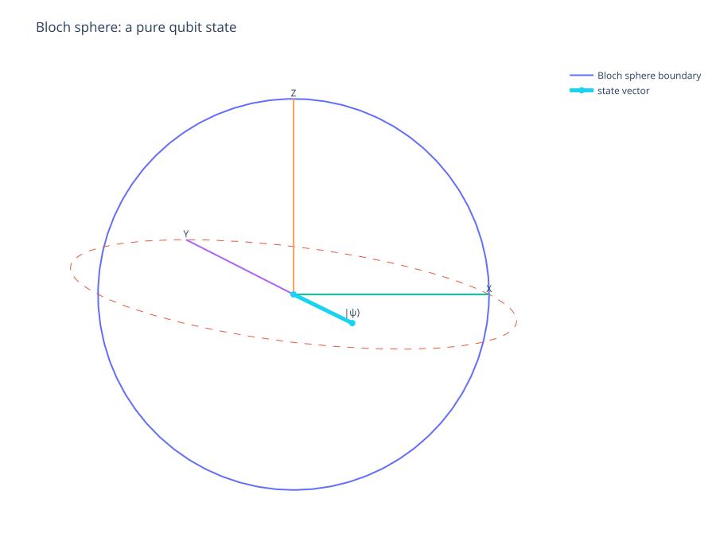
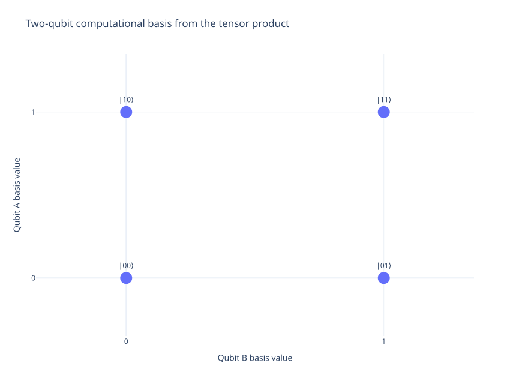
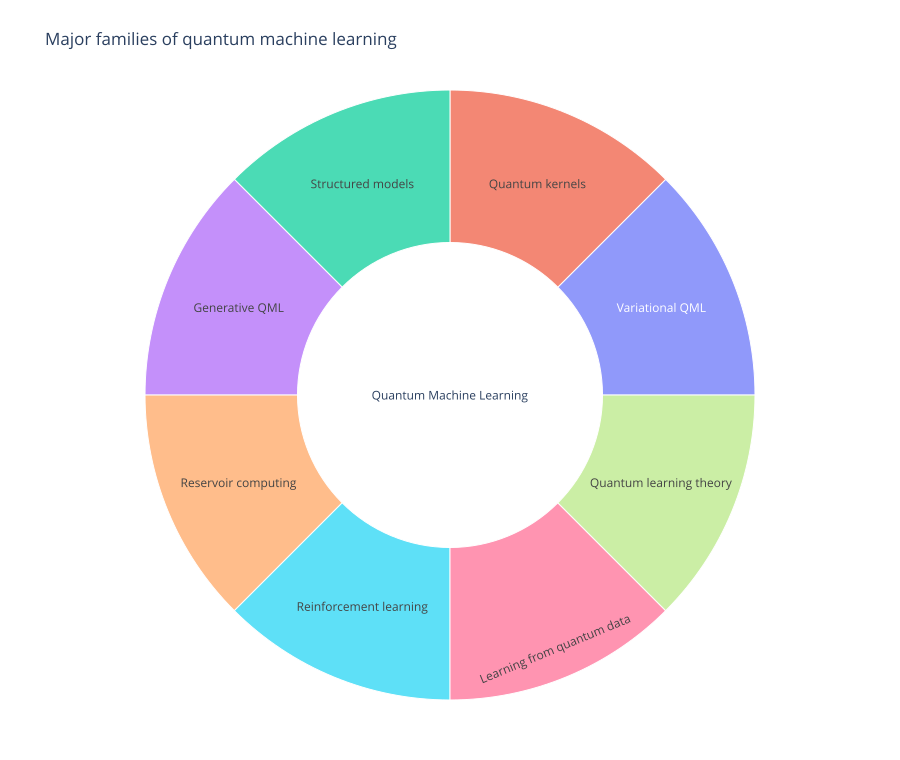

Single-qubit geometry
The Bloch sphere turns amplitudes and Pauli expectation values into a geometric picture.
A structured learning path through quantum information, computational models, hardware, canonical algorithms, variational methods, quantum information theory, and quantum machine learning — with the conceptual layers kept separate.
The repository separates mathematical foundations, computational abstractions, physical implementations, algorithms, and learning paradigms so that similar terms do not collapse into one another.
Amplitudes, Hilbert spaces, Bloch geometry, tensor products, entanglement, density operators, and measurements.
↗ 02Gate-based, adiabatic, annealing, analog, measurement-based, and continuous-variable computation.
↗ 03Superconducting circuits, trapped ions, neutral atoms, photonics, spin qubits, and topological approaches.
↗ 04Deutsch–Jozsa, Grover, phase estimation, Shor, simulation, and amplitude estimation.
↗ 05PQCs, ansätze, VQE, QAOA, gradients, measurement cost, and barren plateaus.
↗ 06Channels, entropy, entanglement theory, resource theories, communication, and error correction.
↗ 07Encoding, variational models, kernels, QCNNs, generative models, quantum data, trainability, and advantage.
↗ 08A shared glossary, notation guide, terminology map, and bibliography for the entire repository.
↗The repository uses an explicit terminology discipline: physical implementation, computational model, trainable object, optimization framework, and task are related — but they are not synonyms.
Equations are introduced as explanations, not decorations. Resource assumptions are stated when they materially change the interpretation of an algorithm.
The visual layer is intentionally selective. Figures are used to expose state-space geometry, composition, and the organization of QML — not to decorate pages.

The Bloch sphere turns amplitudes and Pauli expectation values into a geometric picture.

Two two-dimensional systems produce a four-dimensional joint computational basis.

Variational QML sits alongside kernels, generative models, reservoir methods, learning theory, and quantum-data learning.
The first chapter maps quantum information science before the repository moves into qubits, measurements, composite systems, algorithms, and learning.